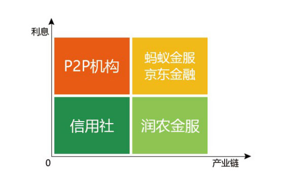

做得比蚂蚁金服重一点，让农民轻松一点
前言：
农村金融成为下一个风口，蚂蚁金服和京东金融战略布局。面对巨头夹击，润农金服探索出农村金融的4.0版本，“产业金融+消费金融”，既解决了农民贷款渠道缺乏的基础问题，更解决了农民融资成本过高的核心“痛点”。
▲图为润农金服CEO陈辉
今天的互联网金融，就像北京的“霾”，令人窒息
晚上七点半，记者来到位于北京朝阳区的润农金服办公室。室内一派繁忙，窗外全是雾霾。这正如国内互联网金融的现状：又热又闷。
陈辉坐在办公桌前，略显疲倦，却又掩盖不住内心的兴奋。昨晚，他刚从山西飞回来，走访完几十位村长，听到的都是对润农金服创新模式的感激之情。
陈辉是北京润农金服科技有限公司CEO，给人第一印象，像个销售经理。言行举止，都非常接地气。
陈辉说，去年，他带领团队跑了中国近百个县，发现很多贫困农民，虽然借助互联网金融，获得了比信用社更好的授信额度，也借此扩大了生产。但除去各种成本和相当于信用社2-3倍的互联网贷款利息。一年到头，兜里依然没能余下钱。明年开春，他们还得继续借贷维生。
陈辉认为，互联网金融最大的问题在于：很“猛”但不“持久”
陈辉回想起自己5年前进入互联网金融行业的情景。 那时，整个行业讨论的都是穷人银行家尤努斯的普惠金融理念，伟大而崇高。 互联网金融创新者进入这个行业的共同理由是：中国还有很多底层消费者的金融需求没有得到满足，他们的很多资产无法识别和定价，传统金融机构的模式无法满足他们，他们有权利借助新金融工具，追求更美好的生活。
经过5年的粗放式发展，互联网金融面临的问题也逐渐显露。 最明显的就是用户“复贷率”非常低。 整个互联网金融的“普惠”深度和持续力，并未像大家想象中的那样“又猛又持久”。在平台补贴的诱惑下，大部分用户在尝试过一次“普惠”服务后，猛然发现，原来“被普惠”的成本这么高！ 既能承受高于银行贷款2-3倍的利息，又有迫切贷款需求的用户，永远是少数。 陈辉认为，互联网金融应该回归金融“服务”的本质，农村金融更应该回归穷人银行“普惠”的本质。
在上一家互联网金融公司被巨头并购后，陈辉这次要做一家“普及”且“实惠”的农村金融公司。一方面要做到对传统金融机构无法识别和定价的资产，进行精准识别和精准定价；一方面要通过产业金融模式，大幅降低农民的生产性融资成本，让其真正实现净收入的提升，改变“循环贫困”的命运，与城里人一样，享受消费升级带来的幸福感。
润农金服从产业金融切入，做得比蚂蚁金服重一点
也许是习惯了与农民打交道，陈辉喜欢用简单直观的方式描述事物本质。 他用白纸给记者画了一张图，横轴是贷款利息，纵轴是产业链深度。
由上图可见：
信用社位于左下方：产业链渗透浅，利息较低；
P2P平台位于左上方：产业链渗透浅，利息较高；
蚂蚁金服和京东金融位于右上方：产业链渗透深，利息也较高；
润农金融位于右下方：产业链渗透深，利息较低。
陈辉解释说，这四个区域，每一种商业模式都可以用一个简单的公式表示：
信用社利润=资金利息-资金成本-运营成本-坏账
P2P平台利润=资金利息-资金成本-运营成本-坏账-风险保障金-贷款保险
蚂蚁金服/京东金融利润=资金利息-资金成本-运营成本-坏账-风险保障金-贷款保险+消费金融利润
润农金服利润=资金利息-资金成本-运营成本-坏账+产业服务利润+消费金融利润
润农金服“产业金融+消费金融”的创新模式，使得金融服务的成本结构巨大优化，堪称农村金融的4.0版本。
润农金服独特的风险控制模型，直接少了两项成本
互联网金融和农村金融，再怎么变化也离开不了金融的核心——风控。 润农金服的产业金融之所以比2.0和3.0版本少了风险准备金和贷款保险两项成本，主要在于其独特的风控模型。
1、大数据筛选低风险产业。
农业产业结构复杂，可控性低；而金融厌恶风险，渴望稳定。二者本相矛盾。 为找到最低风险的产业，陈辉带领拥有多年互联网金融经验的团队，设计了几十个维度的核心评价指标，包括产业增长率、产业总产量、种植集中度、水土要求、价格波动率、流通集中度、保鲜成本、加工难度、储藏时间、借款产出比、政策支持度等等。
润农金服给每个指标设定权重，对所有产业进行了模型运算。 根据数据运算结果，他们筛选出了十几个适合做产业金融的细分产业。为了谨慎验证模型逻辑，润农金服从中选出高辣型辣椒产业作为试点产业。
2、订单式农业，实现资金闭环。
产业金融的核心在于出资人的资金能否实现闭环。以高辣型辣椒产业为例，“老干妈”是其下游对接主要客户之一，双方提前签订了收购协议，保证了资金100%可回收，贷款几乎零风险。
通过这种闭环控制，除了大幅降低坏账可能性，还直接去掉了风险准备金和贷款保险两项显著成本。
在互联网金融的实践中，如果项目本身存在巨大风险，即使通过贷款保险，也容易因为多方衔接出现BUG，导致项目信息失真，从而对出资人造成重大损失。 近期，蚂蚁金服旗下招财宝3亿元违约事件震惊业界。如此严谨的金融服务协议，竟然盖的是一个“萝卜章”，发行方、平台方、保险方相互推诿，事件负面影响还在蔓延。
蚂蚁金服作为纯平台，对项目把控弱，因此隐藏着潜在风险。蚂蚁金服的模式，扩张起来虽然很快，未必稳定；虽然很猛，未必持久。
平台型轻模式在电商领域可能适用，但在金融领域未必是帕累托最优。因为金融的核心是：风控第一，安全第一。
3、成熟的互联网金融经验，保障基础金融风控。
润农金服团队由百度、消费金融公司、恒生电子等高管组成，有多年的金融从业经验和创业经验。团队上一次创业是2010年开始的互联网金融项目，于2015年被并购之后顺利退出。
可以说，农村金融领域1.0、2.0、3.0版本的风控结构，无论是借助第三方大数据平台，还是通过线下风控团队管理，润农金服团队都有非常丰富的经验。 升级到4.0版本后，润农金服团队借助产业风控新模型，风险更加可控，成本结构大幅优化。
基于这种创新的模型，润农金服在2016年初就获得了一笔种子投资。2016年6月，又顺利拿到了中路资本的天使轮投资。
润农金服向产业服务要利润，让农民轻松一点
在高辣型辣椒产业试点过程中，润农金服以金融技术为驱动，把商业模式做重，通过与产业链公司合作，获得产业服务利润。并将产业服务利润，补贴给农民，以此大幅降低农民的贷款利息，在项目初期，甚至直接实行了“零利息”。 润农金服的产业服务内容包括：整合种子机构、筛选潜力新产区、整合闲置实验基地、产业规模化对接农资厂家、为产业公司自营加工环节提供融资等等。 润农金服以金融为杠杆，以规模为后盾，以产业公司为支柱，高效整合全产业链资源，最终为农户提供产业服务价值，并获得相应的利润，反哺利息成本。 这种创新的模式，在前期快速推广过程中，即使全额补贴农户利息，也可以获得可观的利润回报。
对农民而言，既能获得从信用社无法贷到的资金，又不需要支付像蚂蚁金服相当于信用社2倍的利息。因此，润农金服模式试点以来，得到了贫困区农户的积极拥戴。
截止2016年12月，润农金服的业务覆盖山西、河南、山东等省份，签约农户过万户，签约种植面积近10万亩，签约贷款金额近1亿元。
农户借助润农金服的产业金融服务，净收入直接提升了5倍，成功脱贫。与此同时，产业公司也成为润农金服模式的直接受益者，其产值规模从合作前到合作后，直接翻了20倍，成为农村土地流转的先进代表。当地通过产业替换，试点项目成为农村供给侧改革的典型案例，仅山西一个县就为农民增收1个亿。
结合当前精准扶贫政策，农民还可以获得贷款利息补贴，净收入将再次提升。 润农金服实现了出资人、政府、村委、产业公司、农户的五赢局面，得到了当地政府的大力支持。
润农金服新模式试点成功后，引起了县级政府的强烈反响。很多县政府领导以及扶贫办负责人，主动找到润农金服，迫切希望将这个模式推广到本地区，一举解决“贫困农民脱贫”和“农业供给侧改革”两大难题。
除了高辣型辣椒产业，当地政府还结合自身特色，主动推荐了其他产业的金融合作项目，其中有些产业恰好与润农金服大数据测算的低风险产业模型相吻合，成为润农金服下一步模式复制的优先产业。
叠加消费金融，是水到渠成的事情
农民通过润农金服的产业金融获得净收入提升，必将改善生活水平，促进消费。 通过产业金融的模式，润农金服不仅获得了上万名精准用户，更为用户下一步体验消费金融服务奠定了基础。
因此，相比单纯的消费金融平台，润农金服的运营成本将更低。同样的消费产品，可以提供比对手更有竞争力的价格。
产业金融+消费金融的叠加模型，让农村金融更具生命力。
农村金融4.0时代已经到来，真正的蓝海市场已经打开。
过去五年，互联网金融做到了“普及”。
未来五年，互联网金融谁能做到“实惠”，谁才能“又猛又持久”。
“实惠金融，润泽三农”——这就是润农金服的初心。